0. Azure cloud resources¶

For registered attendees of the CernVM-FS tutorial at the 6th EasyBuild User Meeting (Jan 25-29 2021), a small cluster of virtual machines is available in Microsoft Azure to use for the hands-on parts of the tutorial.
These resources are sponsored by Microsoft.
Step 0: Log in to CycleCloud¶
To get started, you should log into the Azure CycleCloud web portal, where you can manage the virtual machine cluster that was prepared for you.
Visit https://cvmfstutorial.westeurope.cloudapp.azure.com,
and log in with the user name (cvmfs0XY) and the password that you received via email (don't try using
cvmfs001 as shown in the screenshot below, that will not work).
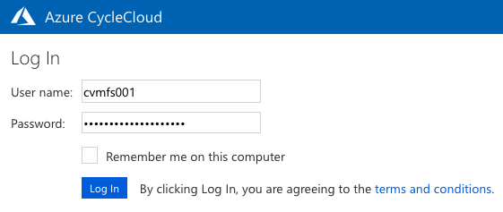
You will need to create and confirm a new password in order to login in.
Make sure you use a password you can remember!.
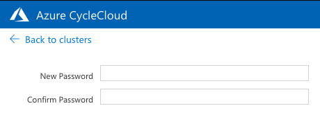
If you need a password reset, either contact eum@lists.ugent.be,
or ask in the #eum21-cvmfs-tutorial channel in the EasyBuild Slack.
Step 1: Add SSH public key¶
Before you do anything with the nodes in the cluster, make sure you add your SSH public key into your CycleCloud account.
Note: this must be an RSA SSH public key (ed25519 will not work)!
Use My Profile which you can access by clicking your name in the top right corner:
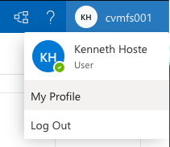
Then click Edit Profile:
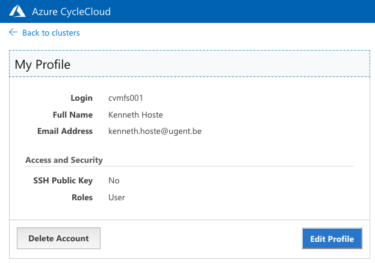
Add your SSH public key (must be RSA!), and click Save.
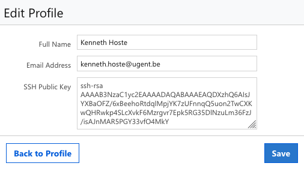
Then use the Back to cluster link at the top left corner to return to the previous screen.
Step 2: Start cluster¶
Once you have added your SSH public key, you can start the cluster using the Start "play" button:

Shortly after, you should see that all nodes were started (green status bar):
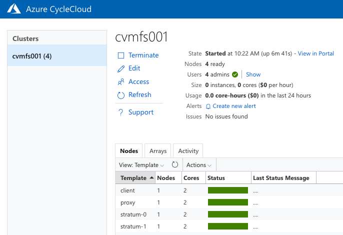
Step 3: SSH into a node¶
Once a node is started, you can SSH into it using your cvmfs0XY user name and the public IP address of the node.
To determine the IP address of a node, select it in the Nodes overview: the IP address will be shown in
the Host/IP column in the detailed view at the bottom:
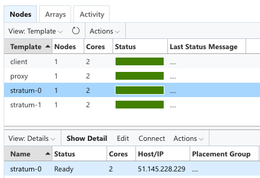
To log into the node, use the ssh command from a Linux or macOS system:
# change accordingly for your user name and IP address!
$ ssh cvmfs001@51.145.228.229
The authenticity of host '51.145.228.229 (51.145.228.229)' can't be established.
ECDSA key fingerprint is SHA256:Lv19NNnDJlMEcJskqS9tU7SlyLibD3u1vKSc7HJqlAM.
Are you sure you want to continue connecting (yes/no/[fingerprint])? yes
Warning: Permanently added '51.145.228.229' (ECDSA) to the list of known hosts.
[cvmfs001@ip-0A000009 ~]$
(or use PuTTy on Windows).
You will need to confirm the host key fingerprint the first time you log in (enter yes as shown above).
Once you're logged in, you are ready to get started with the hands-on parts of the tutorial!
Don't suspend unused nodes!¶
The virtual machines do not have a fixed IP address.
This means that their IP address will change if you suspend the machines while not using them and restart them later, and you will have to reconfigure your CernVM-FS services.
Therefore we recommend to leave all your nodes running for the duration of the workshop.
Other actions¶
Resetting a single node¶
If you have made some mistakes, and would like to reset a node to start from a blank slate, you can do so as follows:
-
Select the node and use
Actions->Shut Down:
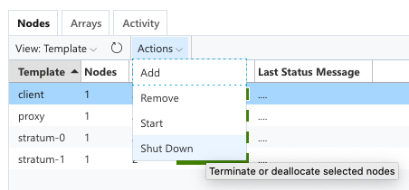
-
Use the
Terminate ...option (the default). Do keep in mind that this will erase all data and configuration for that node!
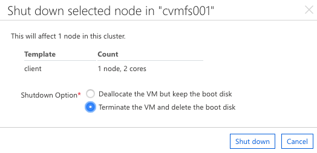
-
Click
Shut down, and wait until the node is fully off (gray status bar):
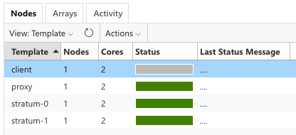
-
Finally, start the node again to complete the reset cycle:
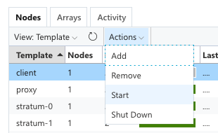
Keep in mind that this implies that this node will have a different IP address afterwards!
Resetting all nodes (entire cluster)¶
If you want to restart from scratch on all nodes, you can do so to.
Keep in mind that all data and configuration on all nodes will be lost when doing this.
Terminate the entire cluster using the Terminate button just below the cluster name (same as your user name):
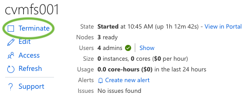
Once the cluster is fully shut down (all node status bars are gray), you can start it again:
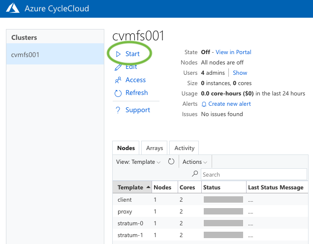
Keep in mind that this implies that all nodes will have a different IP address afterwards!